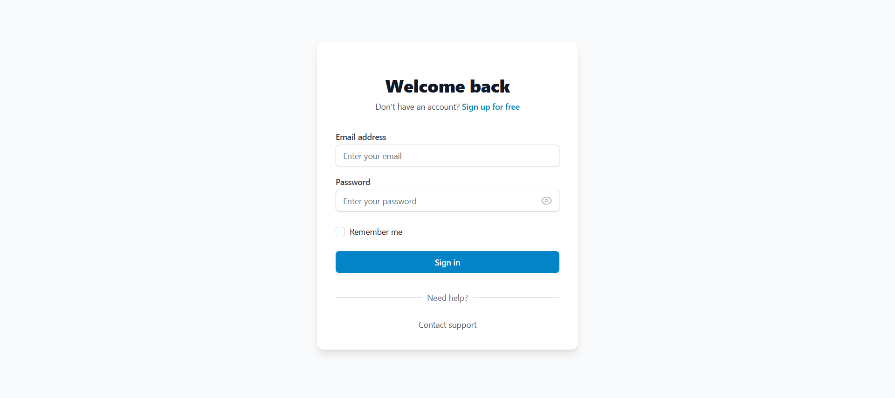
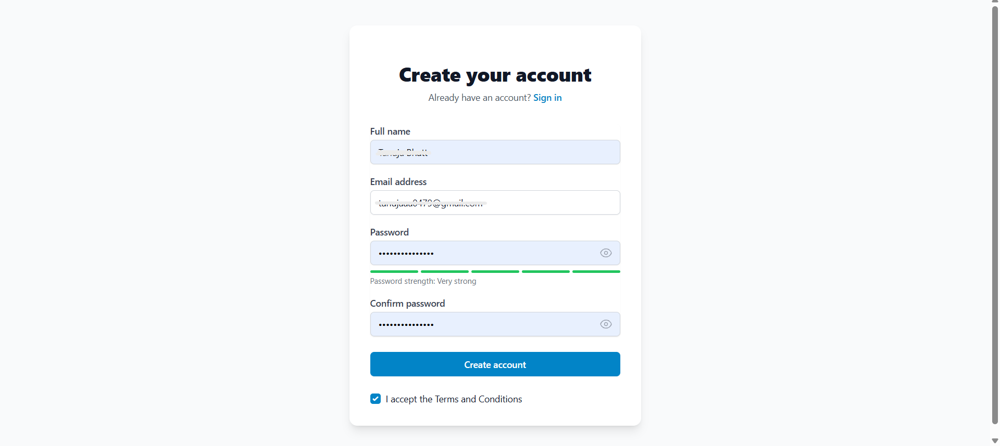
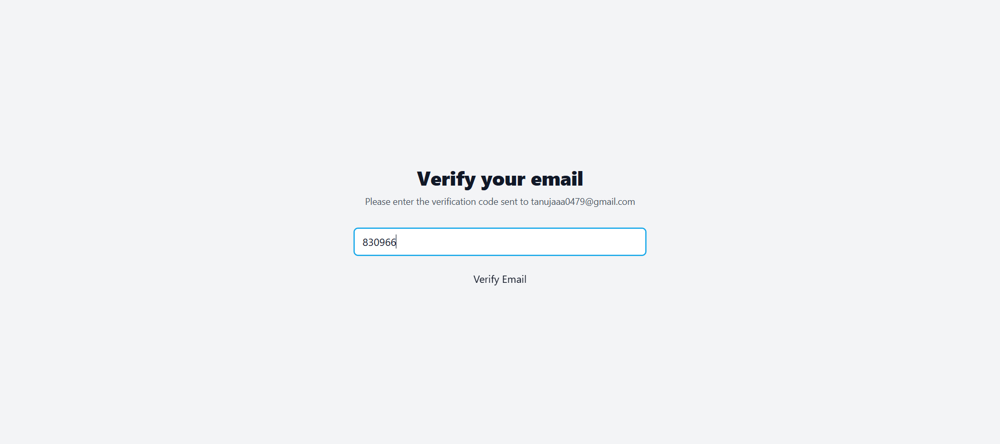
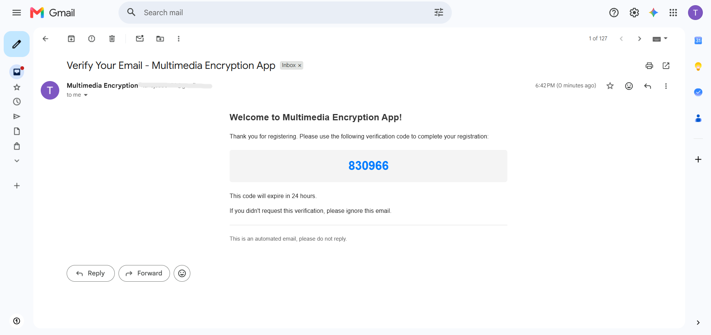
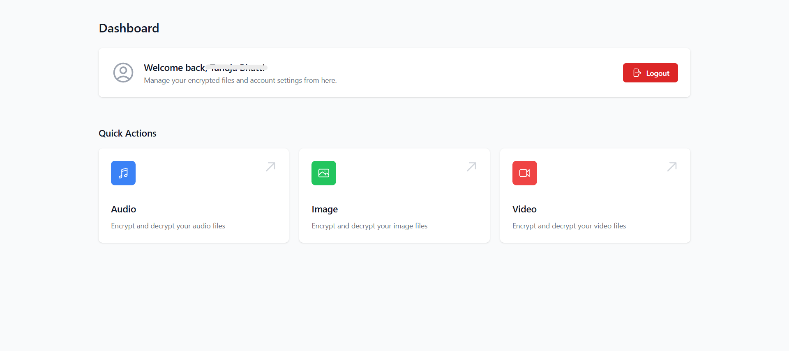
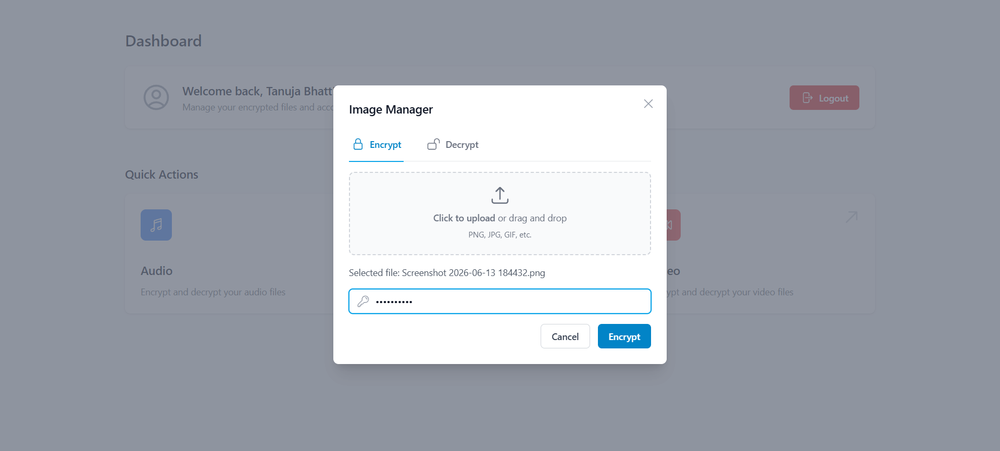
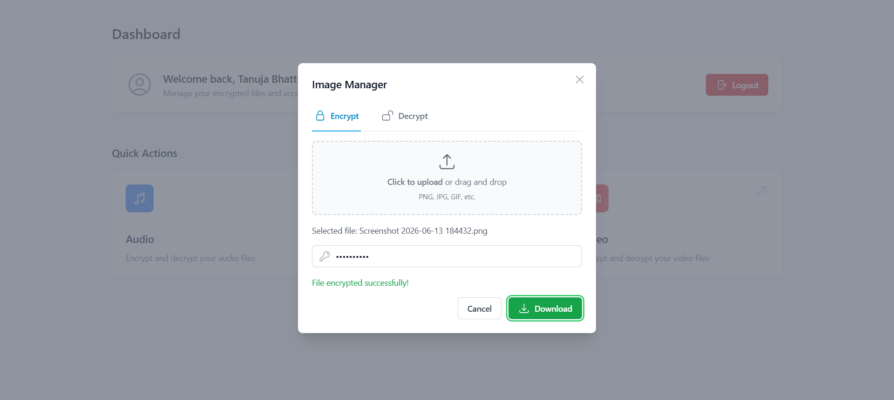
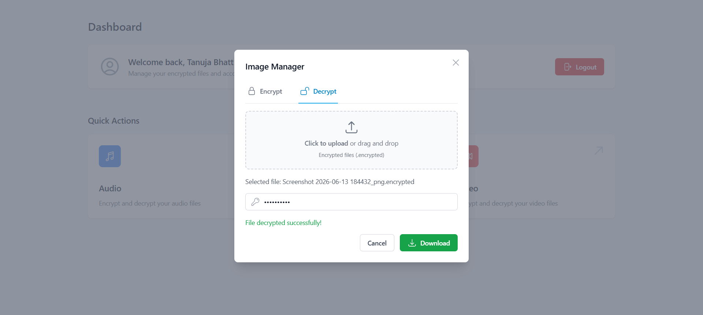

Multi-media Encryption and Decryption
Problem Statement
With the increasing exchange of multimedia files such as images, audio, and videos over the internet, protecting sensitive data from unauthorized access has become a major challenge. Traditional file-sharing methods often expose data to security risks, making encryption essential for maintaining confidentiality and privacy.
Purpose of the Project
The purpose of this project is to provide a secure platform for encrypting and decrypting multimedia files. It enables users to protect their images, audio, videos, and documents using strong encryption techniques, ensuring that only authorized users can access the original content.
Approach
- Designed a secure web-based multimedia encryption system.
- Implemented encryption and decryption functionalities for different file types.
- Developed a user-friendly interface for file upload and processing.
- Integrated secure key management mechanisms.
- Ensured efficient handling of large multimedia files.
Working
Users can upload multimedia files through the web interface and choose whether to encrypt or decrypt them. The system processes the files using encryption algorithms and generates secure output files. During decryption, the correct key is required to restore the original content. This ensures confidentiality and prevents unauthorized access to sensitive multimedia data.
Technologies Used
- Frontend: React.js
- Backend: Express.js (Node.js)
- Database: MongoDB
- Authentication: JWT (JSON Web Tokens)
- Email Service: SMTP for email notifications and verification
- Encryption: Multimedia file encryption and decryption algorithms
Key Features
- Image, Audio, Video and Document Encryption
- Secure File Decryption using Secret Key
- User-Friendly Web Interface
- Fast Processing of Multimedia Files
- Protection Against Unauthorized Access
Project Screenshots








Challenges Faced
- Handling different multimedia file formats efficiently.
- Implementing secure encryption and decryption mechanisms.
- Managing large file sizes without affecting performance.
- Ensuring data integrity during file processing.
Future Enhancements
- Support for cloud storage integration.
- Advanced encryption algorithms.
- Multi-user authentication and access control.
- Real-time file sharing with encryption.
- Enhanced security monitoring and logging.